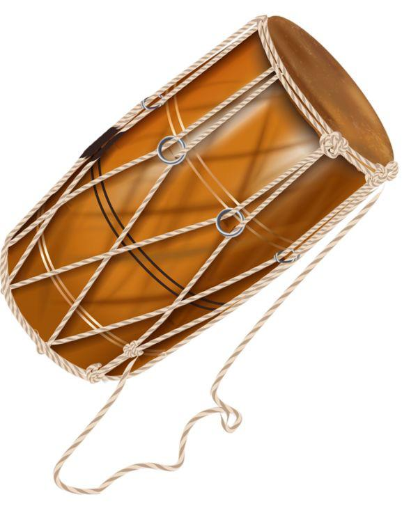
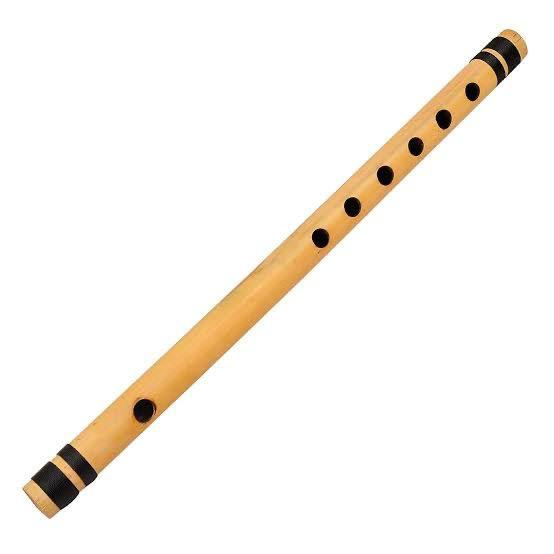
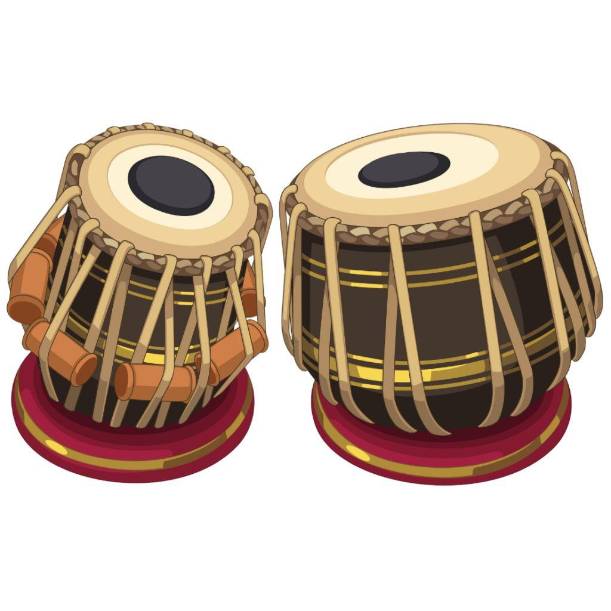
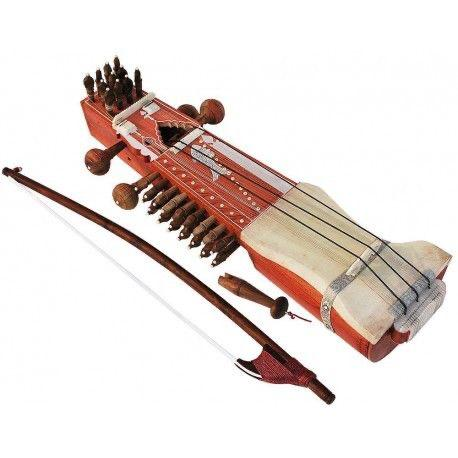
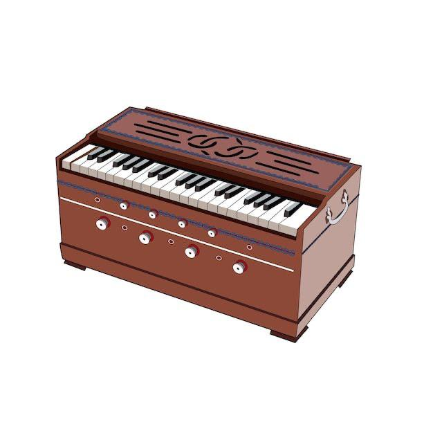
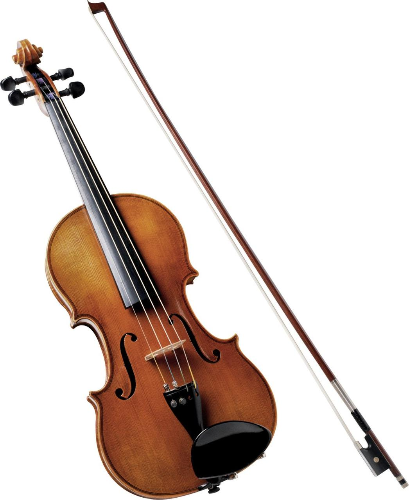
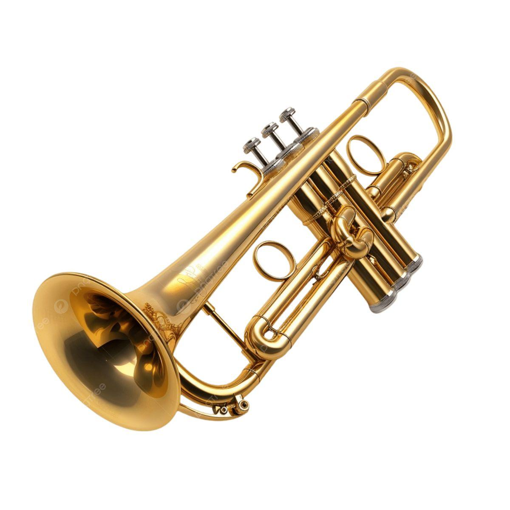
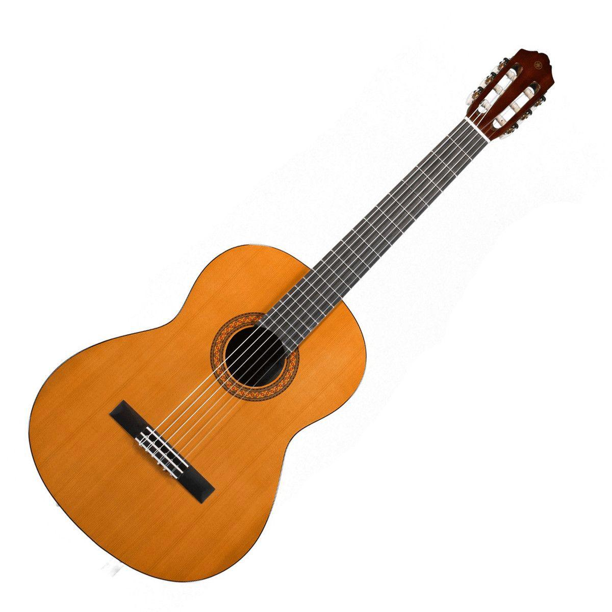

Dhol
Explore the beauty of Indian folk instruments like Dhol, Bansuri, Tabla, Sarangi, and Harmonium. Click on each to listen and learn!
Explore Instruments







Indian folk music is the heartbeat of the land — a reflection of its people, culture, and traditions. Rooted in rural life, these timeless melodies tell stories of joy, love, devotion, and celebration.
Each region has its own unique rhythm and instruments: the Dhol drives Punjab’s vibrant dances, the Bansuri sings gentle tunes of devotion, and the Harmonium carries the voice of countless songs. String instruments like the Sarangi and Fiddle express deep emotion, while wind and percussion add spirit and energy.
Handcrafted from natural materials, every instrument tells a story — shaped by artisans, passed through generations, and celebrated in festivals and gatherings. Today, these sounds continue to inspire modern artists, keeping India’s folk heritage alive in every beat.
Have questions, feedback, or want to collaborate? We’d love to hear from you! Whether you’re a music lover, a student, or an artist, share your thoughts and help us keep India’s folk heritage alive.